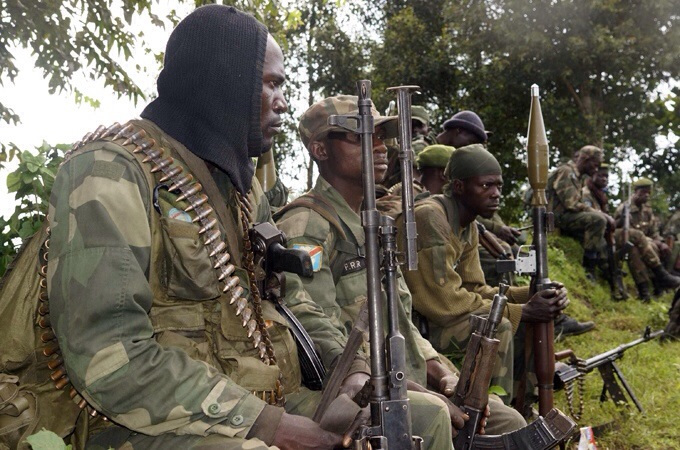
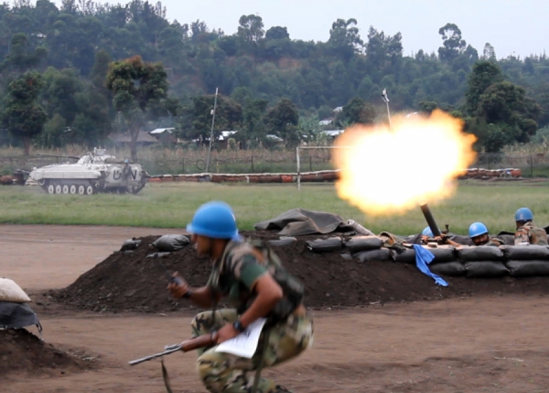
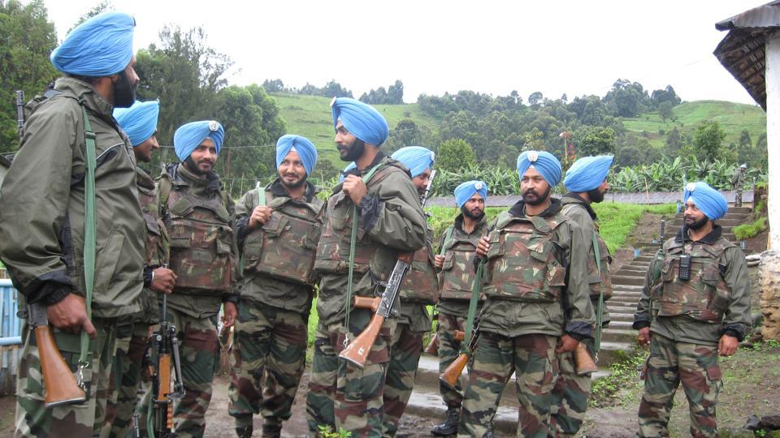
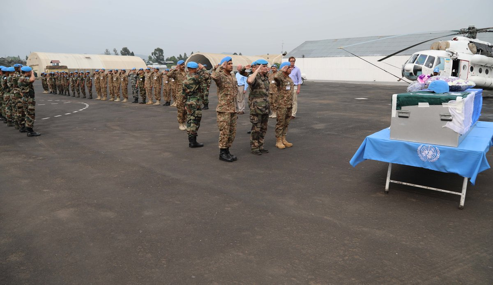
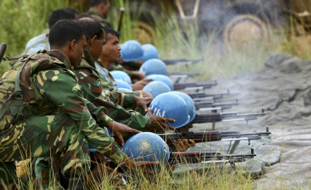
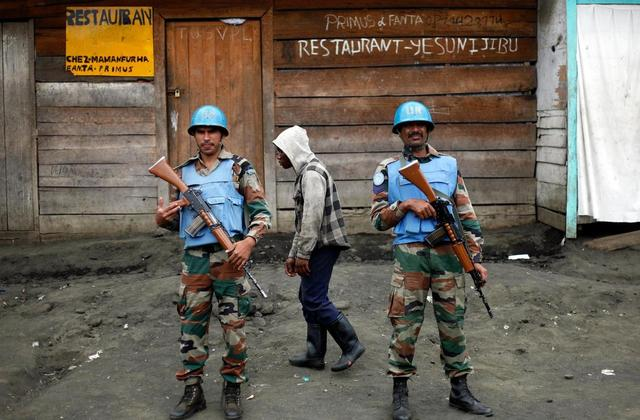
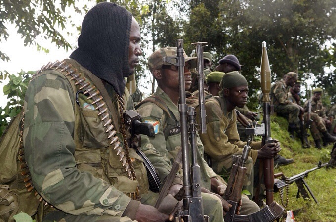
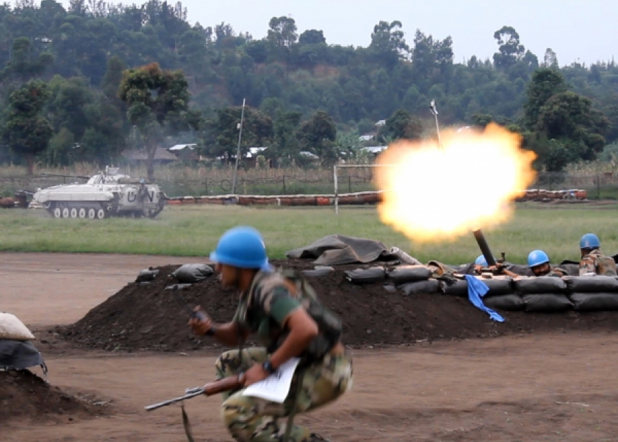
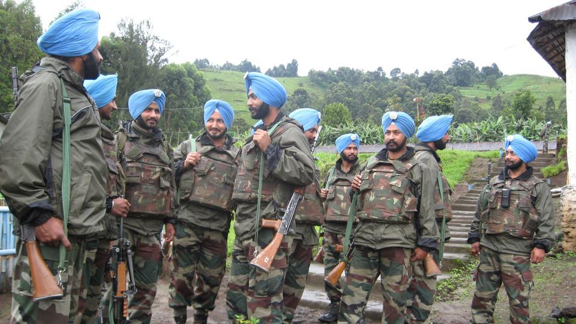
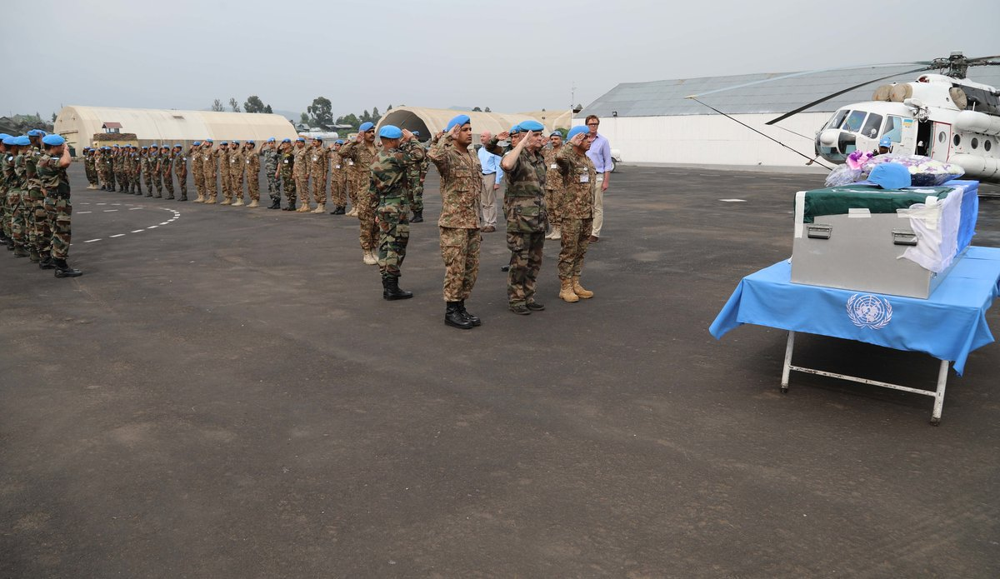
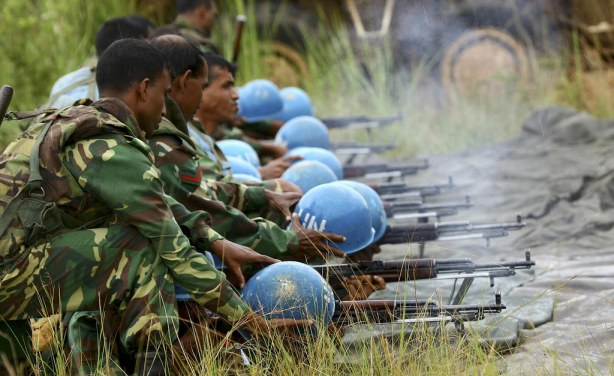
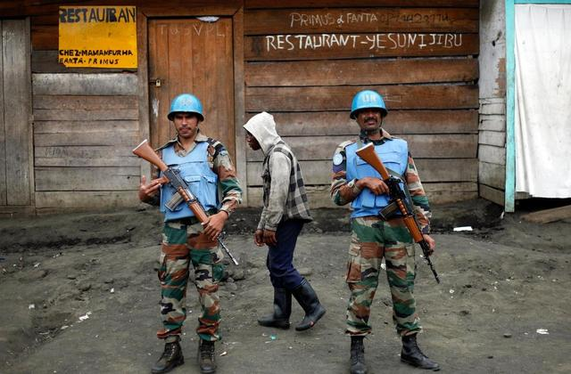

 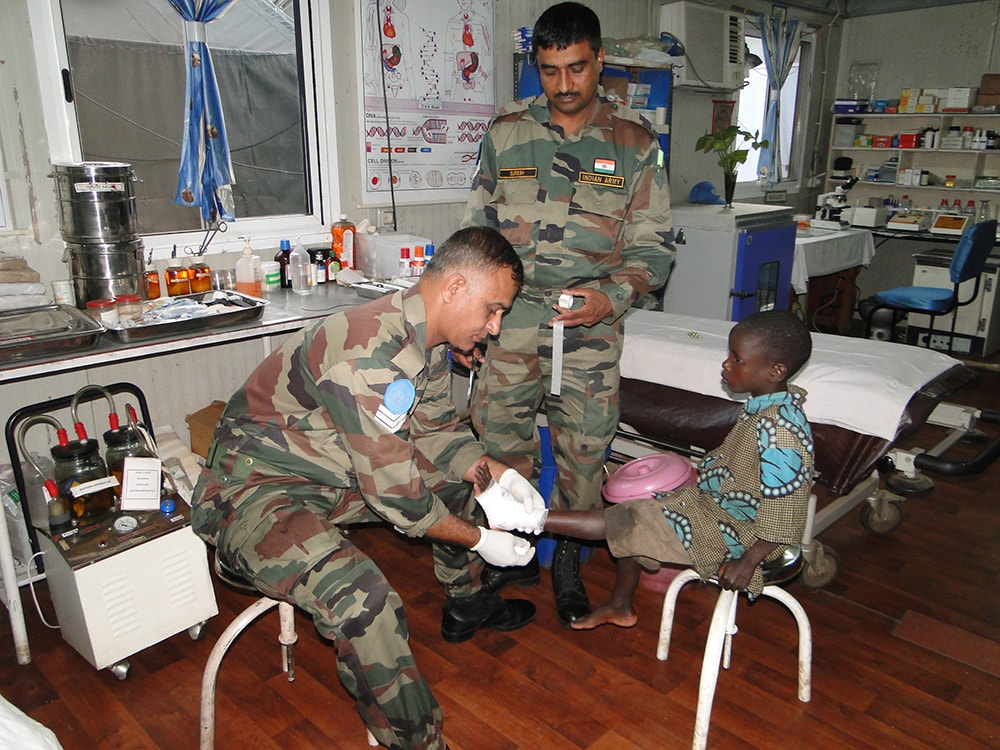
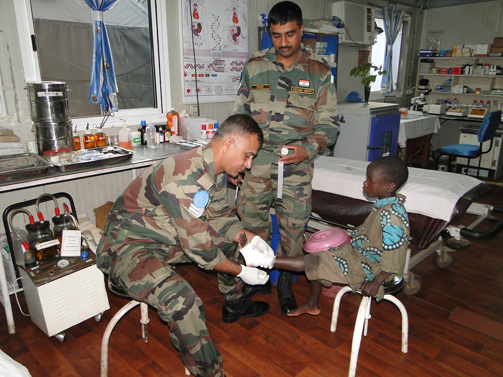
What is this about?
The stream of photographs below narrates a story about the life of soldiers involved in the United Nations Peacekeeping Mission (MONUC) in Congo. The photos are also accompanied by some quotes from my father, who was posted at the heart of the conflict in 2006-2007.